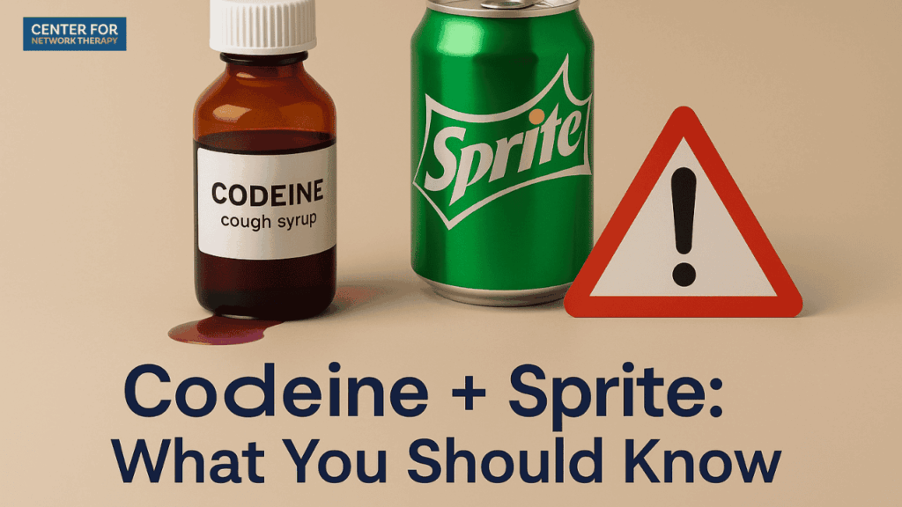

Sleepiness is one of the most common side effects of codeine. The drug slows down your brain and makes you feel exhausted and unable to stay awake. You might fall asleep at school, while driving, or during important activities. This can be really dangerous because you can't focus or react quickly if something bad happens.
Constipation means you can't go to the bathroom normally and it gets really uncomfortable. Codeine slows down your digestive system so food moves through your body very slowly. Your body takes out too much water from your poop, making it hard and painful. This side effect is so common that doctors often give you something else to help you go to the bathroom.
Nausea is a sick feeling in your stomach that makes you want to throw up. Codeine upsets your stomach and also triggers parts of your brain that make you want to vomit. This can happen pretty soon after you take the drug. Throwing up a lot can dehydrate you and make you feel even worse.
An overdose happens when you take too much codeine and your body can't handle it. Your breathing can slow down so much that your blood doesn't get enough oxygen, which can cause your heart to stop. Signs of an overdose include very blue lips or skin, extreme drowsiness that you can't wake up from, and almost no breathing at all. If you see these signs in someone, call 911 right away because an overdose can kill you.
